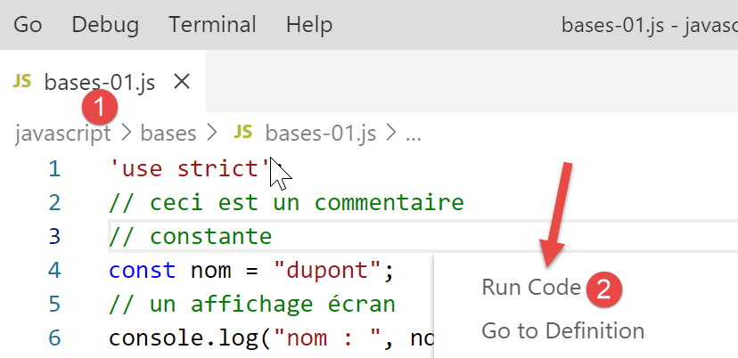

3. Los fundamentos de JavaScript
Nota: en lo sucesivo, el término [Javascript] se referirá siempre a la norma ECMAScript 6.
Dentro del proyecto de JavaScript anterior, crea una carpeta [bases]. En ella colocaremos los ejemplos de esta sección:

3.1. script [bases-01]
Para introducir los conceptos básicos de PHP7, habíamos utilizado el siguiente código (véase el párrafo del enlace):
<?php
// esto es un comentario
// variable utilizada sin haber sido declarada
$nom = "dupont";
// una salida a pantalla
print "nom=$nom\n";
// una matriz con elementos de tipos diferentes
$tableau = array("un", "deux", 3, 4);
// su número de elementos
$n = count($tableau);
// un bucle
for ($i = 0; $i < $n; $i++) {
print "tableau[$i]=$tableau[$i]\n";
}
// inicialización de dos variables con el contenido de una matriz
list($chaine1, $chaine2) = array("chaine1", "chaine2");
// concatenación de las dos cadenas
$chaine3 = $chaine1 . $chaine2;
// visualización del resultado
print "[$chaine1,$chaine2,$chaine3]\n";
// uso de una función
affiche($chaine1);
// se puede conocer el tipo de una variable
afficheType("n", $n);
afficheType("chaine1", $chaine1);
afficheType("tableau", $tableau);
// el tipo de una variable puede cambiar durante la ejecución
$n = "a changé";
afficheType("n", $n);
// una función puede devolver un resultado
$res1 = f1(4);
print "res1=$res1\n";
// una función puede devolver una matriz de valores
list($res1, $res2, $res3) = f2();
print "(res1,res2,res3)=[$res1,$res2,$res3]\n";
// se podrían haber recuperado estos valores en una matriz
$t = f2();
for ($i = 0; $i < count($t); $i++) {
print "t[$i]=$t[$i]\n";
}
// pruebas
for ($i = 0; $i < count($t); $i++) {
// solo muestra las cadenas
if (getType($t[$i]) === "string") {
print "t[$i]=$t[$i]\n";
}
}
// operadores de comparación == y ===
if("2"==2){
print "avec l'opérateur ==, la chaîne 2 est égale à l'entier 2\n";
}else{
print "avec l'opérateur ==, la chaîne 2 n'est pas égale à l'entier 2\n";
}
if("2"===2){
print "avec l'opérateur ===, la chaîne 2 est égale à l'entier 2\n";
}
else{
print "avec l'opérateur ===, la chaîne 2 n'est pas égale à l'entier 2\n";
}
// otras pruebas
for ($i = 0; $i < count($t); $i++) {
// solo muestra los números enteros >10
if (getType($t[$i]) === "integer" and $t[$i] > 10) {
print "t[$i]=$t[$i]\n";
}
}
// un bucle «while»
$t = [8, 5, 0, -2, 3, 4];
$i = 0;
$somme = 0;
while ($i < count($t) and $t[$i] > 0) {
print "t[$i]=$t[$i]\n";
$somme += $t[$i]; //$somme=$somme+$t[$i]
$i++; //$i=$i+1
}//mientras
print "somme=$somme\n";
// fin del programa
exit;
//----------------------------------
function affiche($chaine) {
// muestra $chaine
print "chaine=$chaine\n";
}
//muestra
//----------------------------------
function afficheType($name, $variable) {
// muestra el tipo de $variable
print "type[variable $" . $name . "]=" . getType($variable) . "\n";
}
//afficheType
//----------------------------------
function f1($param) {
// suma 10 a $param
return $param + 10;
}
//----------------------------------
function f2() {
// devuelve 3 valores
return array("un", 0, 100);
}
?>
Traducido a JavaScript, esto da como resultado el siguiente código:
'use strict';
// esto es un comentario
// constante
const nom = "dupont";
// una salida a pantalla
console.log("nom : ", nom);
// una matriz con elementos de diferentes tipos
const tableau = ["un", "deux", 3, 4];
// su número de elementos
let n = tableau.length;
// un bucle
for (let i = 0; i < n; i++) {
console.log("tableau[", i, "] = ", tableau[i]);
}
// inicialización de dos variables con el contenido de una matriz
let [chaine1, chaine2] = ["chaine1", "chaine2"];
// concatenación de las dos cadenas
const chaine3 = chaine1 + chaine2;
// visualización del resultado
console.log([chaine1, chaine2, chaine3]);
// uso de una función
affiche(chaine1);
// se puede conocer el tipo de una variable
afficheType("n", n);
afficheType("chaine1", chaine1);
afficheType("tableau", tableau);
// el tipo de una variable puede cambiar durante la ejecución
n = "a changé";
afficheType("n", n);
// una función puede devolver un resultado
let res1 = f1(4);
console.log("res1=", res1);
// una función puede devolver una matriz de valores
let res2, res3;
[res1, res2, res3] = f2();
console.log("(res1,res2,res3)=", [res1, res2, res3]);
// se podrían haber recuperado estos valores en una matriz
let t = f2();
for (let i = 0; i < t.length; i++) {
console.log("t[i]=", t[i]);
}
// pruebas
for (let i = 0; i < t.length; i++) {
// solo muestra las cadenas
if (typeof (t[i]) === "string") {
console.log("t[i]=", t[i]);
}
}
// operadores de comparación == y ===
if ("2" == 2) {
console.log("avec l'opérateur ==, la chaîne 2 est égale à l'entier 2");
} else {
console.log("avec l'opérateur ==, la chaîne 2 n'est pas égale à l'entier 2");
}
if ("2" === 2) {
console.log("avec l'opérateur ===, la chaîne 2 est égale à l'entier 2");
} else {
console.log("avec l'opérateur ===, la chaîne 2 n'est pas égale à l'entier 2");
}
// otras pruebas
for (let i = 0; i < t.length; i++) {
// solo muestra los números enteros mayores que 10
if (typeof (t[i]) === "number" && Math.floor(t[i]) === t[i] && t[i] > 10) {
console.log("t[i]=", t[i]);
}
}
// un bucle «while»
t = [8, 5, 0, -2, 3, 4];
let i = 0;
let somme = 0;
while (i < t.length && t[i] > 0) {
console.log("t[i]=", t[i]);
somme += t[i];
i++;
}
console.log("somme=", somme);
//: el programa se detiene porque ya no hay código ejecutable
//muestra
//----------------------------------
function affiche(chaine) {
// muestra una cadena
console.log("chaine=", chaine);
}
//afficheType
//----------------------------------
function afficheType(name, variable) {
// muestra el tipo de variable
console.log("type[variable ", name, "]=", typeof (variable));
}
//----------------------------------
function f1(param) {
// suma 10 a «param»
return param + 10;
}
//----------------------------------
function f2() {
// devuelve 3 valores
return ["un", 0, 100];
}
Comentemos las diferencias entre los códigos PHP y ECMAScript 6 con la declaración [use strict] (línea 1):
- la primera diferencia es que en ECMAScript se declaran las variables con las siguientes palabras clave:
- [let] para declarar una variable cuyo valor puede cambiar durante la ejecución del código;
- [const] para declarar una variable cuyo valor no va a cambiar (es decir, una constante) durante la ejecución del código;
- también se puede utilizar la palabra clave [var] en lugar de [let]. Esta era la palabra clave utilizada con ECMAScript 5. No la utilizaremos en este curso;
- línea 6: el método de visualización [console.log] puede mostrar todo tipo de datos: cadenas, números, valores booleanos, matrices y objetos. El método PHP [print] no es capaz de mostrar matrices y objetos de forma nativa. En la expresión [console.log], [console] es un objeto y [log] un método de dicho objeto;
- línea 8: las matrices de JavaScript son objetos a los que se hace referencia mediante un puntero. Cuando se escribe:
const tableau = ["un", "deux", 3, 4];
la variable [tableau] es un puntero al array literal ["un", "deux", 3, 4]. Modificar el contenido del array no modifica su puntero. Por ello, un array se declarará, en la mayoría de los casos, con la palabra clave [const]. En PHP, un array no está referenciado por un puntero. Se trata de un dato literal;
- línea 12: la variable de bucle [i] se declara (let) dentro del bucle. La palabra clave [let] respeta el ámbito del bloque (código entre llaves). Por lo tanto, la variable [i] de la línea 12 solo es conocida dentro del bucle;
- línea 18: el operador de concatenación de cadenas es el operador + en JavaScript, y . en PHP. Una particularidad de este operador es que tiene prioridad sobre el operador + de suma. Así,
- en PHP, «1» + 2 da como resultado el número 3;
- en JavaScript, «1» + 2 da como resultado la cadena «12»;
- línea 20: [console.log] es capaz de mostrar tablas;
- línea 82: en JavaScript, no es posible indicar el tipo de los parámetros de una función;
- línea 91: el operador [typeof] permite conocer el tipo de un dato. Hay cuatro: número, cadena de caracteres, booleano y objeto. Cabe señalar que en JavaScript no existe el tipo [integer] ni el tipo [tableau]. Como se ha mencionado, las tablas se manipulan mediante punteros y entran en la categoría de objetos;
- líneas 50-59: al igual que en PHP, JavaScript tiene dos operadores de comparación, == y ‘===’, con el mismo significado que en PHP. ESLint suele señalar el operador == como un posible error. Se utilizará sistemáticamente el operador ‘===’;
- línea 79: se podría haber utilizado la instrucción [return], pero ESLint muestra una advertencia indicando que [return] solo debe utilizarse dentro de una función;
Ejecutemos este código:

Resultados de la ejecución:
[Running] C:\myprograms\laragon-lite\bin\nodejs\node-v10\node.exe "c:\Temp\19-09-01\javascript\bases\bases-01.js"
nom : dupont
tableau[ 0 ] = un
tableau[ 1 ] = deux
tableau[ 2 ] = 3
tableau[ 3 ] = 4
[ 'chaine1', 'chaine2', 'chaine1chaine2' ]
chaine= chaine1
type[variable n ]= number
type[variable chaine1 ]= string
type[variable tableau ]= object
type[variable n ]= string
res1= 14
(res1,res2,res3)= [ 'un', 0, 100 ]
t[ 0 ]= un
t[ 1 ]= 0
t[ 2 ]= 100
t[ 0 ]= un
avec l'opérateur ==, la chaîne 2 est égale à l'entier 2
avec l'opérateur ===, la chaîne 2 n'est pas égale à l'entier 2
t[ 2 ]= 100
t[ 0 ]= 8
t[ 1 ]= 5
somme= 13
[Done] exited with code=0 in 0.316 seconds
En el código escrito, ESLINT señala dos errores:

- al pasar el cursor por encima de la línea roja de la advertencia, aparece el mensaje de error [3]. En este caso, ESLint no reconoce que se están comparando dos constantes. Uno de los dos operandos debería ser una variable;
- en [4], una opción [Quick Fix] permite suprimir la advertencia si se decide no corregir el error;

- en [5], existe la posibilidad de desactivar la advertencia para la línea actual o para todo el archivo. Es esta última opción la que elegimos aquí. A continuación, se genera la línea [6] al principio del archivo;
3.2. script [bases-02]
El script [bases-02] muestra el uso de las palabras clave [let] y [const]:
'«use strict»;
// para inicializar una variable, se utiliza «let» o «const»
// «let» para las variables
let x = 4;
x++;
console.log(x);
// «const» para las constantes
const y = 10;
x += y;
// prohibido
y++;
- la línea 11 provoca un error durante la ejecución de [1-2]. Este error es señalado por ESLint antes de la ejecución de [3]:

3.3. script [bases-03]
El script [bases-03] comprueba el ámbito de las variables en JavaScript:
'use strict';
// ámbito de las variables
let count = 1;
function doSomething() {
// «count» ya se conoce aquí
console.log("count=",count);
}
// llamada
doSomething();
- la variable [count], declarada fuera de la función [doSomething], es sin embargo conocida dentro de dicha función. Se trata de una diferencia fundamental con respecto a PHP;
Ejecución
[Running] C:\myprograms\laragon-lite\bin\nodejs\node-v10\node.exe "c:\Temp\19-09-01\javascript\bases\bases-03.js"
count= 1
[Done] exited with code=0 in 0.3 seconds
3.4. script [bases-04]
Una variable local enmascara una variable global con el mismo nombre:
'use strict';
// ámbito de las variables
const count = 1;
function doSomething() {
// la variable local enmascara la variable global
const count = 2;
console.log("count inside function=",count);
}
// variable global
console.log("count outside function=",count);
// variable local
doSomething();
Ejecución
[Running] C:\myprograms\laragon-lite\bin\nodejs\node-v10\node.exe "c:\Temp\19-09-01\javascript\bases\bases-04.js"
count outside function= 1
count inside function= 2
[Done] exited with code=0 in 0.246 seconds
3.5. script [bases-05]
Una variable definida en una función no es conocida fuera de ella:
'use strict';
// ámbito de las variables
function doSomething() {
// variable local de la función
const count = 2;
console.log("count inside function=", count);
}
// aquí «count» no se conoce
console.log("count outside function=", count);
doSomething();
ESLint muestra un error en la línea 9:

3.6. script [bases-06]
Las palabras clave [let] y [const] definen variables de ámbito [bloc] (código entre llaves), pero no la palabra clave [var]:
'use strict';
// la palabra clave [let] permite definir una variable con ámbito de bloque
{
// la variable [count] solo es conocida en este bloque
let count = 1;
console.log("count=", count);
}
// aquí, la variable [count] no se conoce
count++;
// La palabra clave [const] permite definir una variable con ámbito de bloque
{
// la variable [count2] solo se conoce en este bloque
const count2 = 1;
console.log("count=", count2);
}
// aquí, la variable [count2] no se conoce
count2++;
// la palabra clave [var] no permite definir una variable de ámbito de bloque
{
// la variable [count3] tendrá alcance global
var count3 = 1;
console.log("count=", count3);
}
// aquí la variable [count3] es conocida
count3++;
Comentarios
- línea 5: la variable [count] solo es conocida dentro del bloque de código en el que se declara (líneas 3-7);
- línea 14: la constante [count2] solo es conocida dentro del bloque de código en el que se declara (líneas 12-16);
- línea 23: la variable [count3] se conoce fuera del bloque de código en el que se declara (líneas 21-25);
ESLint declara los siguientes errores:

Por estas razones relacionadas con el ámbito del bloque, a partir de ahora solo utilizaremos las palabras clave [let] y [const].
3.7. script [bases-07]
Los tipos de datos en JavaScript:
'«use strict»;
// tipo de datos jS
const var1 = 10;
const var2 = "abc";
const var3 = true;
const var4 = [1, 2, 3];
const var5 = {
nom: 'axèle'
};
const var6 = function () {
return +3;
}
// visualización de los tipos
console.log("typeof(var1)=", typeof (var1));
console.log("typeof(var2)=", typeof (var2));
console.log("typeof(var3)=", typeof (var3));
console.log("typeof(var4)=", typeof (var4));
console.log("typeof(var5)=", typeof (var5));
console.log("typeof(var6)=", typeof (var6));
Ejecución
[Running] C:\myprograms\laragon-lite\bin\nodejs\node-v10\node.exe "c:\Temp\19-09-01\javascript\bases\bases-07.js"
typeof(var1)= number
typeof(var2)= string
typeof(var3)= boolean
typeof(var4)= object
typeof(var5)= object
typeof(var6)= function
[Done] exited with code=0 in 0.26 seconds
Comentarios
- línea 7 (código): un array es un objeto. Por lo tanto, [var4] es un puntero al array, no el propio array;
- línea 8 (código): [var5] es un puntero a un objeto literal. Veremos que los objetos literales de JavaScript se parecen mucho a las instancias de clase de PHP. Estos también se referencian mediante punteros;
- línea 11 (código): una variable puede ser de tipo [fonction] (línea 7 de los resultados);
3.8. script [bases-08]
Este script muestra los posibles cambios de tipo en JavaScript.
'use strict';
// cambios implícitos de tipo
// tipo --> bool
console.log("---------------[Conversion implicite vers un booléen]------------------------------");
showBool("abcd");
showBool("");
showBool([1, 2, 3]);
showBool([]);
showBool(null);
showBool(0.0);
showBool(0);
showBool(4.6);
showBool({});
showBool(undefined);
function showBool(data) {
// la conversión de datos a booleano se realiza automáticamente en la prueba siguiente
console.log("[data=", data, "], [type(data)]=", typeof (data), "[valeur booléenne(data)]=", data ? true : false);
}
// cambios implícitos de tipo a u n tipo numérico
console.log("---------------[Conversion implicite vers un nombre]------------------------------");
showNumber("12");
showNumber("45.67");
showNumber("abcd");
function showNumber(data) {
// «data + 1» no funciona porque, en ese caso, jS realiza una concatenación de cadenas en lugar de una suma
const nombre = data * 1;
console.log("[data=", data, "], [type(data)]=", typeof (data), "[nombre]=", nombre, "[type(nombre)]=", typeof (nombre));
}
// Cambios explícitos de tipo a booleano
console.log("---------------[Conversion explicite vers un booléen]------------------------------");
showBool2("abcd");
showBool2("");
showBool2([1, 2, 3]);
showBool2([]);
showBool2(null);
showBool2(0.0);
showBool2(0);
showBool2(4.6);
showBool2({});
showBool2(undefined);
function showBool2(data) {
// la conversión de «data» a booleano se realiza explícitamente en la comprobación siguiente
console.log("[", data, "], [type(data)]=", typeof (data), "[valeur booléenne(data)]=", Boolean(data));
}
// cambios explícitos de tipo a «Number»
console.log("---------------[Conversion explicite vers un nombre]------------------------------");
showNumber2("12.45");
showNumber2(67.8);
showNumber2(true);
showNumber2(null);
function showNumber2(data) {
const nombre = Number(data);
console.log("[data=", data, "], [type(data)]=", typeof (data), "[nombre]=", nombre, "[type(nombre)]=", typeof (nombre));
}
// a String
console.log("---------------[Conversion explicite vers un string]------------------------------");
showString(5);
showString(6.7);
showString(false);
showString(null);
function showString(data) {
const chaîne = String(data);
console.log("[data=", data, "], [type(data)]=", typeof (data), "[chaîne]=", chaîne, "[type(chaîne)]=", typeof (chaîne));
}
// algunas conversiones implícitas inesperadas
console.log("---------------[Autres cas]------------------------------");
const string1 = '1000.78';
// concatenación de cadenas por defecto
const data1 = string1 + 1.034;
console.log("data1=", data1, "type=", typeof (data1));
const data2 = 1.034 + string1;
console.log("data2=", data2, "type=", typeof (data2));
// conversión explícita a número
const data3 = Number(string1) + 1.034;
console.log("data3=", data3, "type=", typeof (data3));
// «true» se convierte en el número 1
const data4 = true * 1.18;
console.log("data4=", data4, "type=", typeof (data4));
// «false» se convierte en el número 0
const data5 = false * 1.18;
console.log("data5=", data5, "type=", typeof (data5));
Ejecución
[Running] C:\myprograms\laragon-lite\bin\nodejs\node-v10\node.exe "c:\Data\st-2019\dev\es6\javascript\bases\bases-08.js"
---------------[Conversion implicite vers un booléen]------------------------------
[data= abcd ], [type(data)]= string [valeur booléenne(data)]= true
[data= ], [type(data)]= string [valeur booléenne(data)]= false
[data= [ 1, 2, 3 ] ], [type(data)]= object [valeur booléenne(data)]= true
[data= [] ], [type(data)]= object [valeur booléenne(data)]= true
[data= null ], [type(data)]= object [valeur booléenne(data)]= false
[data= 0 ], [type(data)]= number [valeur booléenne(data)]= false
[data= 0 ], [type(data)]= number [valeur booléenne(data)]= false
[data= 4.6 ], [type(data)]= number [valeur booléenne(data)]= true
[data= {} ], [type(data)]= object [valeur booléenne(data)]= true
[data= undefined ], [type(data)]= undefined [valeur booléenne(data)]= false
---------------[Conversion implicite vers un nombre]------------------------------
[data= 12 ], [type(data)]= string [nombre]= 12 [type(nombre)]= number
[data= 45.67 ], [type(data)]= string [nombre]= 45.67 [type(nombre)]= number
[data= abcd ], [type(data)]= string [nombre]= NaN [type(nombre)]= number
---------------[Conversion explicite vers un booléen]------------------------------
[ abcd ], [type(data)]= string [valeur booléenne(data)]= true
[ ], [type(data)]= string [valeur booléenne(data)]= false
[ [ 1, 2, 3 ] ], [type(data)]= object [valeur booléenne(data)]= true
[ [] ], [type(data)]= object [valeur booléenne(data)]= true
[ null ], [type(data)]= object [valeur booléenne(data)]= false
[ 0 ], [type(data)]= number [valeur booléenne(data)]= false
[ 0 ], [type(data)]= number [valeur booléenne(data)]= false
[ 4.6 ], [type(data)]= number [valeur booléenne(data)]= true
[ {} ], [type(data)]= object [valeur booléenne(data)]= true
[ undefined ], [type(data)]= undefined [valeur booléenne(data)]= false
---------------[Conversion explicite vers un nombre]------------------------------
[data= 12.45 ], [type(data)]= string [nombre]= 12.45 [type(nombre)]= number
[data= 67.8 ], [type(data)]= number [nombre]= 67.8 [type(nombre)]= number
[data= true ], [type(data)]= boolean [nombre]= 1 [type(nombre)]= number
[data= null ], [type(data)]= object [nombre]= 0 [type(nombre)]= number
---------------[Conversion explicite vers un string]------------------------------
[data= 5 ], [type(data)]= number [chaîne]= 5 [type(chaîne)]= string
[data= 6.7 ], [type(data)]= number [chaîne]= 6.7 [type(chaîne)]= string
[data= false ], [type(data)]= boolean [chaîne]= false [type(chaîne)]= string
[data= null ], [type(data)]= object [chaîne]= null [type(chaîne)]= string
---------------[Autres cas]------------------------------
data1= 1000.781.034 type= string
data2= 1.0341000.78 type= string
data3= 1001.814 type= number
data4= 1.18 type= number
data5= 0 type= number